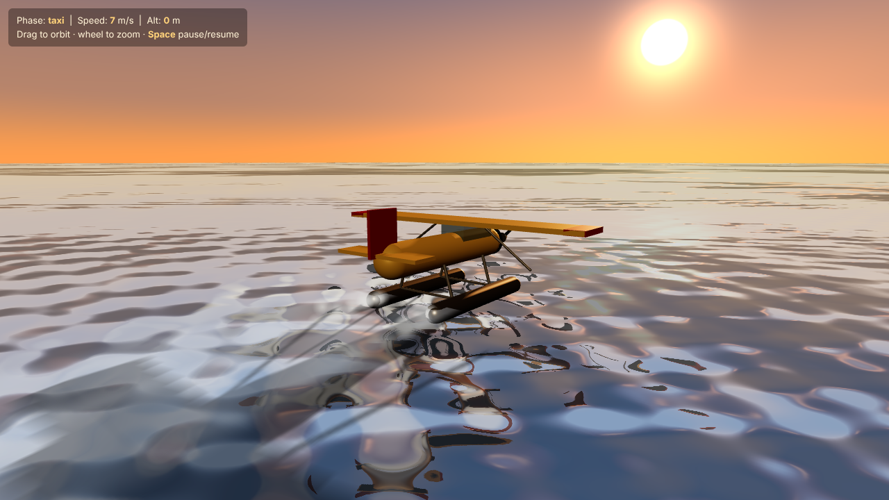
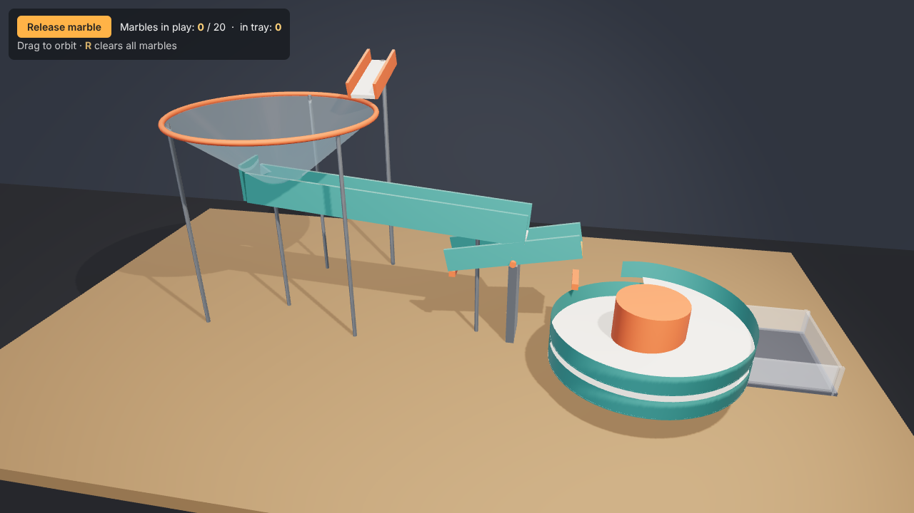

Three single-file Three.js tasks, one protocol, several surfaces. Claude Code column below; other surfaces are added to runs/<surface>/<task>/. Protocol: HANDOFF · RESULTS.md · FAILURE-MODES.md · post-hoc comparison with the Google demos (side-by-side)


Rendered live from RESULTS.csv (written by tools/sweep.sh). Blank cells are human-judged columns, or surfaces not yet run. Token figures for Claude Code are estimates (±30%).
| Loading… |